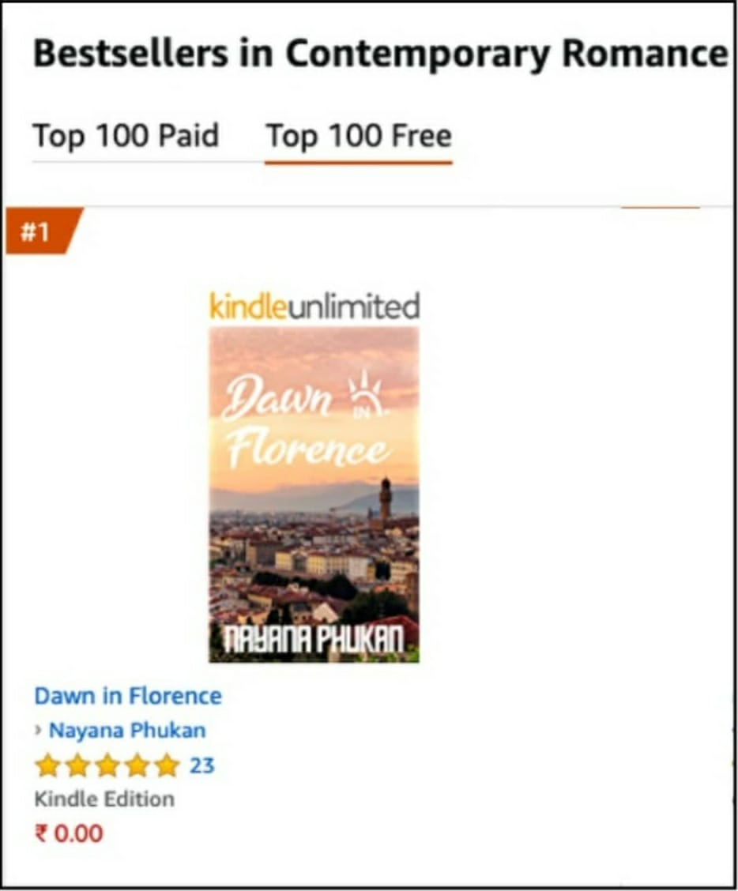

Aditya Roy, a Deputy Superintendent of Police in Delhi, was living a perfect life with his prestigious job and his beautiful fiancée, Sia, but one night, he received a phone call that messed up everything. That night, Aditya was busy writing his daily journal when he received a call from his fiancée. He thought it was a casual good night call, but it was not. She called to inform him about the sudden demise of her uncle, who had been to Bangkok for a week-long vacation. At Sia’s request, Adi flew to Bangkok as soon as possible to collect the dead body and all the information. Though the Thai Police declared it as an accident, he sensed something mysterious and due to the queer feeling; he decided to investigate the case himself. He found out that Sia’s uncle was with a hooker during the accident, and she was the only witness of that mysterious incident. He collected her details and went to meet her at the red-light street of Bangkok, the Soi Cowboy, but his heart stopped beating for a moment when he saw her. She was not a stranger to him; she was Jhiri, his old friend and the first love of his life. Though Adi was not in touch with her for nine long years, it was too hard for him to accept the fact that the girl who wanted to be a pilot once, turned herself into a hooker in Cowboy street. The old memories came flooding back and his curiosity entered the next level. Was Sia’s uncle murdered or was it just an accident? Was Jhiri involved in that murder? Why did that girl born with a silver spoon in her mouth become a hooker on Cowboy Street? Thousands of questions started running through his mind and he decided to stay back in Bangkok till he finds out all the truths.
Adi started his investigation and gradually, all the heart-breaking realities started coming to light. This story is about crime, friendship, love, destiny and the twists and turns of life. Life is unpredictable and no one knows what tomorrow holds.
Amazon Link:Click here
Amazon Link:Click here

‘Dawn in Florence’ is a romantic novel that depicts the story of a strong and independent single mother Leena Shenoy, who fell in love in her late thirties, far away from her kids and her motherland India, in the beautiful city of Florence, Italy. Stunning Italy added colors to the black and white life of Leena. Her complicated love story that blossomed in the beautiful parts of Italy, taught her about that side of love, which is just like a rose with thorns, beautiful yet painful. From the magical Venice of northern Italy to the breath-taking Amalfi coast of southern Italy, from the fashion capital Milan to the architecture capital Rome, every chapter of her Italy diary was full of surprises, love, friendship and unexpected turn of events.She had never imagined falling in love with someone far away from her homeland, but love always comes without prior notice and it can happen to anyone, anytime, anywhere.
Amazon Link:Click here

Amazon Link:Click here